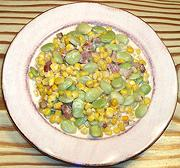

|
SuccotashNorth America | ||||
| Serves: Effort: Sched: DoAhead: |
4 side *** 1 hr Yes |
A simple but tasty side dish, succotash is as American as it gets. The name derives from Narraganset msickquatash, meaning boiled corn, It always contains beans and corn. but there are many variations. | |||
| Central/South American Lima beans are now preferred but were unavailable in colonial times. While the Narragansets preferred bear fat and meat, that's in short supply right now, so we use bacon - replace with olive or nut oil for a vegetarian version. | |||||
|
1 3 6 12 6 1/2 1/4 |
c oz oz oz oz t t |
Baby Lima Beans (1) Bacon Onion Corn Kernels (2) Half & Half Salt Pepper |
Make
|